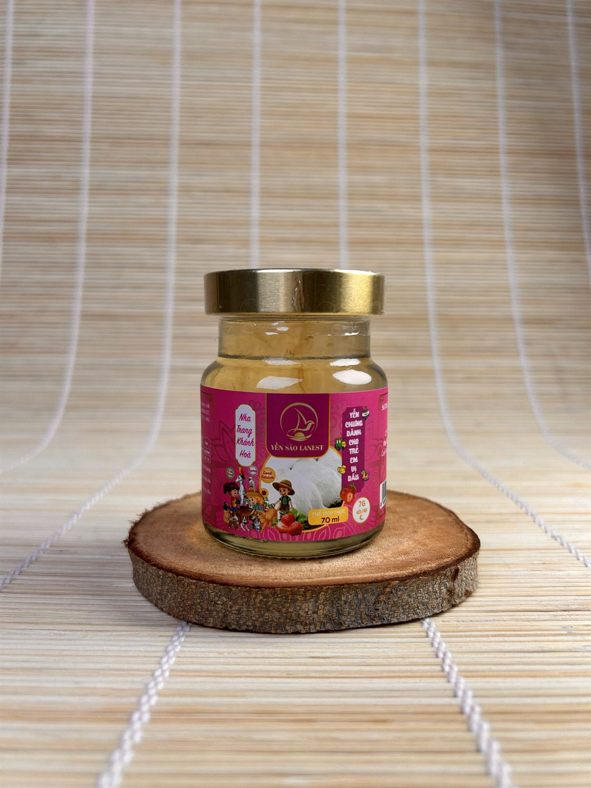

Yến Chưng Cho Trẻ Em Vị Dâu — 7g Yến Tươi Thơm Ngon, Dễ Uống Cho Bé
Yến Sào Lanest · Đăng ngày 21/09/2026

Yến chưng cho trẻ em vị dâu là sự kết hợp hoàn hảo giữa tổ yến thật nguyên chất và vị dâu tây tự nhiên, mang đến hương vị ngon ngọt, dễ uống, thơm mát mà các bé yêu thích. Sản phẩm được chế biến theo công thức cân đối dinh dưỡng, giúp bổ sung năng lượng, tăng sức đề kháng, hỗ trợ tiêu hóa và phát triển toàn diện. Với màu sắc và mùi vị tự nhiên, không chất bảo quản, không phẩm màu nhân tạo, đây là lựa chọn tuyệt vời để cha mẹ chăm sóc sức khỏe cho con mỗi ngày.
Yến chưng cho trẻ em vị dâu là gì?
Yến chưng vị dâu thuộc dòng yến hũ chưng sẵn 7g yến tươi của Yến Sào Lanest — sản phẩm chủ lực chiếm hơn một nửa doanh thu công ty. Mỗi hũ 70ml chứa 7g yến tươi thật, chưng cùng hương dâu tự nhiên, tiệt trùng sẵn, dùng ngay không cần chưng lại.
Thành phần yến chưng cho trẻ em vị dâu
- Nước, yến tươi 7g
- Đường phèn
- Chất xơ inulin
- Chất điều chỉnh độ acid INS (327, 331(iii)), chất ổn định INS (401, 407, 415, 466)
- Hương yến, hương dâu tổng hợp
- Không chất bảo quản, không màu nhân tạo, không đường hóa học
Công dụng của yến chưng vị dâu
Tổ yến — dưỡng chất quý cho sự phát triển của trẻ.
- Cung cấp axit amin và khoáng chất thiết yếu, giúp phát triển trí não, chiều cao, cân nặng và hệ miễn dịch.
- Tăng sức đề kháng, giảm ốm vặt, giúp cơ thể bé chống lại vi khuẩn, virus tốt hơn.
- Hỗ trợ tiêu hóa, giúp trẻ ăn ngon miệng, hấp thu tốt dưỡng chất.
- Cải thiện giấc ngủ, giúp bé ngủ sâu, ngủ ngon, phát triển toàn diện hơn.
Dâu tây tự nhiên — ngon miệng và giàu vitamin C.
- Tăng sức đề kháng nhờ vitamin C và chất chống oxy hóa, giúp giảm cảm cúm.
- Hỗ trợ tiêu hóa nhờ chất xơ tự nhiên, giúp hệ tiêu hóa hoạt động tốt hơn.
- Làm đẹp da, giúp da bé mịn màng, hồng hào.
- Tạo hương vị dễ uống — vị dâu ngọt thanh, thơm nhẹ, kích thích vị giác, giúp bé thích thú mỗi lần thưởng thức.
(Công dụng dâu tây nêu trên là kiến thức dinh dưỡng phổ biến, không phải nghiên cứu riêng của Lanest — dùng ở mức khái quát.)
Vì sao yến chưng vị dâu an toàn cho trẻ nhỏ?
- Dùng đường phèn hoặc đường ăn kiêng tự nhiên, ngọt dịu, không gây sâu răng hay béo phì.
- Không chất bảo quản, không màu nhân tạo, không hương liệu tổng hợp gây hại.
- Phù hợp cho trẻ từ 2 tuổi trở lên, đặc biệt là trẻ biếng ăn, chậm lớn hoặc mới ốm dậy.
- Sản xuất khép kín, tiệt trùng tại xưởng riêng, nguồn gốc Việt Nam.
Yến chưng cho trẻ em vị dâu dùng khi nào, liều lượng ra sao?
Nên cho bé dùng đều đặn, mỗi lần 1 hũ 7g yến tươi, 2–3 lần/tuần, vào buổi sáng hoặc sau bữa ăn xế. Trẻ từ 12 tháng tuổi mới nên bắt đầu dùng yến; với sản phẩm vị dâu này, phù hợp nhất cho bé từ 2 tuổi trở lên.
Cách bảo quản và sử dụng
Bảo quản nơi khô ráo thoáng mát trước khi mở nắp; sau khi mở nên dùng ngay và bảo quản ngăn mát nếu bé chưa dùng hết trong ngày. Có thể dùng lạnh hoặc chưng cách thủy lại cho ấm tùy bé thích.
Yến chưng vị dâu giá bao nhiêu?
Yến chưng cho trẻ em vị dâu đồng giá với 13 vị khác trong dòng yến hũ 7g yến tươi:
| Hình thức mua | Số lượng | Đơn giá/hũ |
|---|---|---|
| Mua lẻ | 1 hũ | 40.000đ |
| Combo tiện lợi | 10 hũ tặng 1 hũ | 40.000đ |
| Combo tiết kiệm | 30 hũ tặng 5 hũ | 40.000đ |
| Khách sỉ (từ 1 thùng 105 hũ) | ≥105 hũ | từ 22.000đ |
(Bảng giá sỉ đầy đủ và chính sách đại lý xem tại trang chính sách bán hàng — giá đã gồm VAT 8%.)
Câu hỏi thường gặp về yến chưng cho trẻ em vị dâu
Bé mấy tuổi thì dùng được yến chưng vị dâu? Sản phẩm phù hợp cho trẻ từ 2 tuổi trở lên, đặc biệt là trẻ biếng ăn, chậm lớn hoặc mới ốm dậy.
Yến chưng vị dâu khác gì so với yến chưng cho trẻ em vị nguyên bản? Yến chưng vị dâu thêm hương dâu tự nhiên, vị ngọt thanh dễ uống hơn, giúp bé hào hứng hơn khi dùng; trong khi vị nguyên bản giữ hương yến thuần túy, phù hợp bé không thích vị ngọt trái cây.
Mua yến chưng cho trẻ em vị dâu ở đâu uy tín?
Ưu tiên chọn tổ yến có nguồn gốc rõ ràng, có giấy kiểm định, không tẩy trắng, không hóa chất. Xem thêm Yến Chưng Cho Trẻ Em vị nguyên bản, 14 vị khác của dòng yến hũ chưng sẵn 7g yến tươi, thử thêm Yến Chưng Tứ Vị cho cả gia đình, hoặc xem toàn bộ sản phẩm Yến Sào Lanest.
- Ảnh hũ sản phẩm chính diện — alt:
yến chưng cho trẻ em vị dâu lanest 40k mỗi hũ - Ảnh bé đang uống/cầm hũ yến (nếu có) — alt:
yến chưng vị dâu cho bé thơm ngon dễ uống - Ảnh tem nhãn/số công bố sản phẩm — alt:
nhãn yến chưng vị dâu 7g yến tươi không chất bảo quản - Ảnh cận cảnh màu dâu tự nhiên trong hũ — alt:
yến chưng vị dâu màu tự nhiên không phẩm màu